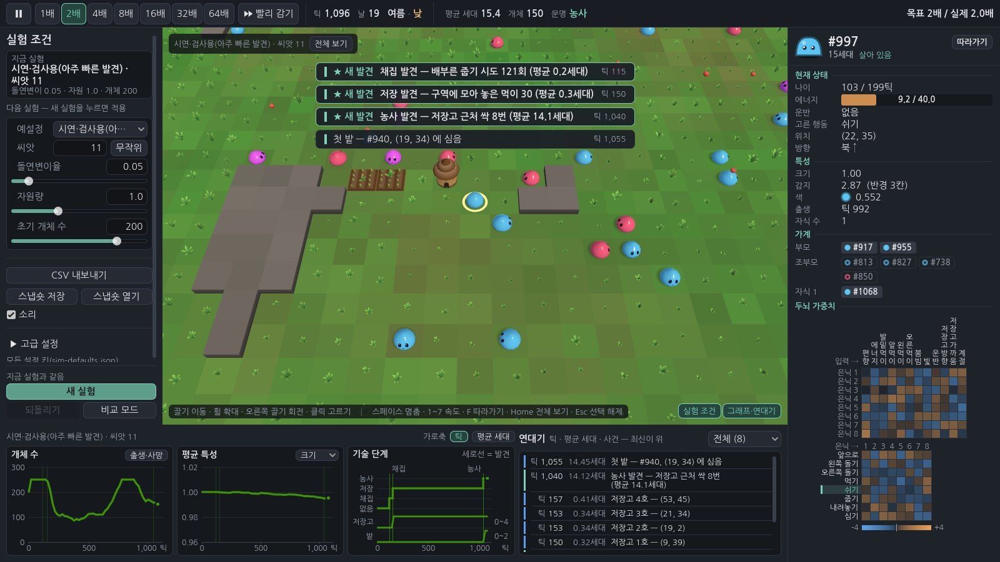
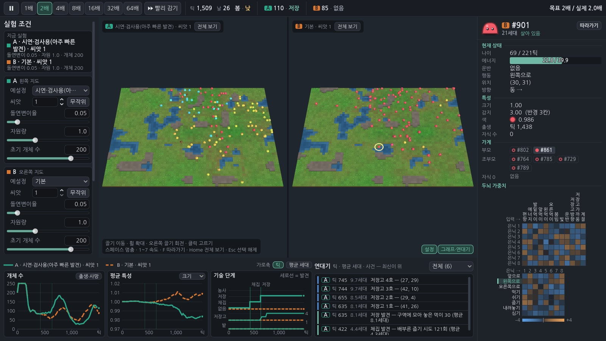
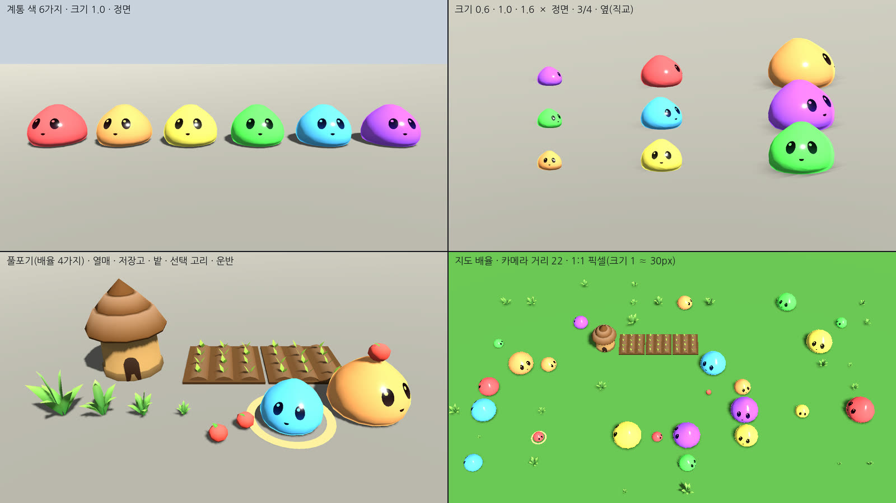
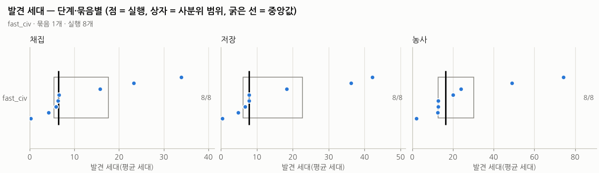
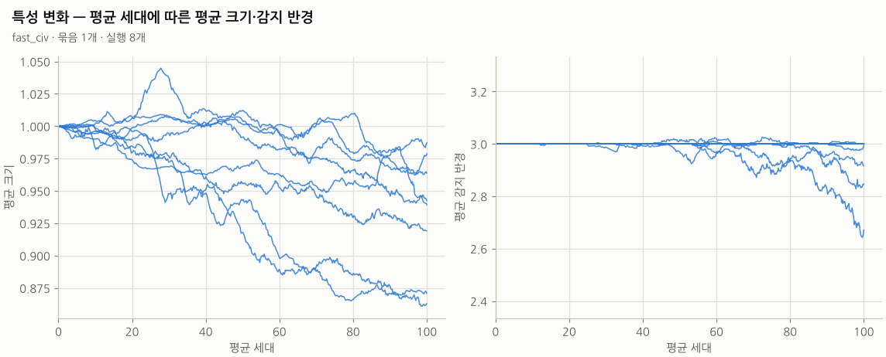
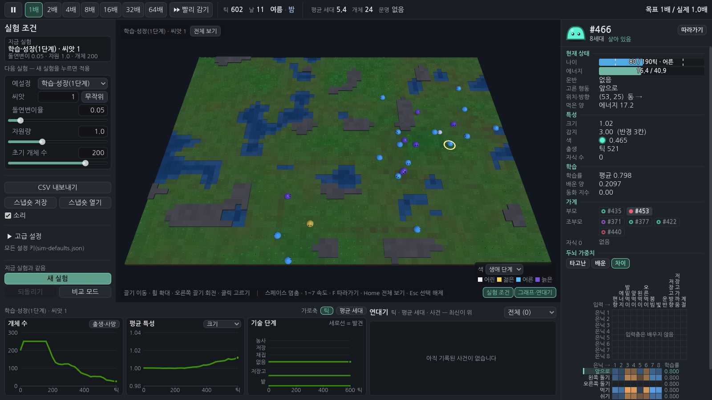

생태
먹고, 번식하고, 죽는다
64×48 격자 지도(풀밭·물·바위)는 씨앗(seed)으로 만듭니다. 식물은 비옥도 × 낮밤 × 계절 × 자원량만큼 자라고, 슬라임은 에너지와 수명이 있으며 성숙하면 가까운 짝과 번식합니다.
Project 02 · 인공생명 시뮬레이션
작은 신경망을 가진 슬라임들이 스스로 먹고 번식하며 세대를 거쳐 진화하고, 행동이 쌓이면 채집 → 저장 → 농사를 발견합니다. 사용자는 조작하지 않고 실험 조건을 정한 뒤 관찰하고 분석하는 연구용 시뮬레이션입니다. 1부(v0.1)는 AI 코딩 에이전트(Claude Code)와 함께 바이브 코딩으로 이틀 동안 만들고, 하루 동안 처음부터 다시 검토해 고쳤습니다.
2부(v0.2)에서는 슬라임이 자라고, 한 생애 안에서 스스로 배우게 했습니다. "배우는 슬라임이 정말 더 잘하나"는 미리 고정한 관문으로 판정했습니다. 앞의 두 번은 판정 불가였고, 판정 규칙을 고친 세 번째에 통과했습니다. 진화한 두뇌에서는 학습의 득이 문턱에 못 미쳤습니다. 다음 단계부터는 설계로만 남기고, 2026년 11월 3일 여기서 마무리했습니다.
체험판은 PC 브라우저(WebGL2)용입니다. 브라우저에서는 데스크톱판보다 느려 높은 배속이 덜 나오며, 화면 오른쪽 위의 "실제 M배"가 그대로 보여 줍니다. 실제 GPU 브라우저에서의 속도는 아직 확인하지 못했습니다(아래 검증 표).
01
규칙은 단순하게, 결과는 관찰로. 모든 수치는 설정 파일 하나에서 읽습니다.
생태
64×48 격자 지도(풀밭·물·바위)는 씨앗(seed)으로 만듭니다. 식물은 비옥도 × 낮밤 × 계절 × 자원량만큼 자라고, 슬라임은 에너지와 수명이 있으며 성숙하면 가까운 짝과 번식합니다.
두뇌와 진화
슬라임마다 입력 12·은닉 8·출력 8의 신경망(가중치 160개 + 크기·감지·색 유전자)이 있습니다. 역전파 없이, 번식할 때 부모의 가중치를 은닉 뉴런 단위로 섞고 돌연변이를 더해 세대가 바뀌며 진화합니다.
문명
아직 열리지 않은 행동(줍기·내려놓기·심기)도 고를 수 있고, 그 "시도"와 결과가 쌓여 임계를 넘으면 발견이 열립니다. 저장을 발견하면 저장고가, 농사를 발견하면 밭이 생깁니다.
같은 씨앗과 같은 설정이면 같은 역사가 나오도록(결정적 시뮬레이션) 시뮬레이션 코드는 사칙연산과 제곱근만 쓰고, 이를 자동 검사로 확인합니다. 실험실에서 내보낸 CSV는 같은 조건의 헤드리스 실행 결과와 글자까지 같습니다.
02
조작하는 게임이 아니라 관찰하는 도구입니다. 그림·모델·효과음은 모두 코드로 만들었습니다.



03
1부(v0.1)의 분석 도구로 여러 씨앗을 실제로 돌린 결과입니다. 꾸민 수치는 없습니다.


04
1부의 슬라임은 유전체로만 세대를 잇습니다. 태어날 때부터 어른 몸이고, 살면서 아무것도 배우지 않습니다. 문명도 세계 하나가 함께 쓰는 단계 숫자라, 한 번 열리면 잃지도 갈라지지도 않고 사다리는 농사에서 끝납니다.
그래서 2부의 방향을 이렇게 요청했습니다(2026-10-11): "세대를 거치면서 각 슬라임이 부모로부터 물려받고 성장과정을 거치면서, 스스로 학습해서 문명을 개척해나가는 과정을 거치게 하고 싶은데". 설계 문서(DESIGN-v0.2)는 이를 여덟 단계로 나눴습니다. 0 관찰 바닥 → 1 성장 + 스스로 학습(관문 A) → 2 무엇을 좋아할지 유전 → 3 물려받기(관문 B) → 4~6 재료·만들기·건물 → 7 실험 묶음. 이번 프로젝트에서 만든 것은 0·1단계까지입니다.
생애
나이에 따라 생애 단계가 바뀝니다. 몸 자람을 켜면 갓 태어난 슬라임은 절반 크기로 시작해 성숙(30틱)할 때까지 자라고, 크기에 따라 최대 에너지·대사·한입이 함께 바뀝니다.
스스로 학습
타고난 두뇌(유전체)와 따로 "배운 두뇌"(출력층의 행동 8행)를 듭니다. 결과가 평소보다 좋으면 방금 한 행동을 강화하고 나쁘면 약화하는 보상 조절 학습으로 스스로 고칩니다. 배운 가중치는 유전되지 않습니다.
학습률 유전자
행동마다 학습률 η가 유전자로 붙어 진화하고, η에 비례하는 학습 비용을 매 틱 냅니다. 배우는 능력에 값이 있어야 "늘 배워야 하는 행동은 타고나게 굳는" 압력(볼드윈 효과)을 볼 수 있기 때문입니다.

05
학습이 실제로 득인지 모른 채 다음 단계를 쌓지 않으려고, 1단계 끝에 관문을 두었습니다. 판정마다 조건은 실행 전에 커밋으로 고정했고(사전 고정), 그 판정의 결과를 본 뒤에는 바꾸지 않았습니다. 다만 3차의 판정 규칙(대상 구간)과 학습 값은 앞의 두 판정 결과를 안 뒤에 고친 것입니다.
질문은 하나입니다. 배우는 슬라임이, 같은 씨앗에서 학습을 멈춘(freeze) 슬라임보다 한 생애 안에서 더 잘 사나? 진화가 섞이지 않게 자식이 무작위 두뇌를 받는 세계에서, 학습·freeze·학습 끔 세 갈래를 씨앗 12개로 돌려 견줍니다.
| 판정 | 결과 | 조건과 수치 |
|---|---|---|
| 첫 판정(10-11) | 판정 불가 | 씨앗 1~12 · 첫 학습 값 · 대상 틱 [200, 600) 출생. 씨앗 9의 freeze 대상이 19마리. 판정 가능한 11씨앗에서도 ① 5/11·비 1.025로 문턱에 못 미쳐, 실패로 보고 학습 값을 다시 골랐습니다 |
| 재판정(10-11) | 판정 불가 | 새 씨앗 13~24 · 다시 고른 학습 값. 씨앗 14·19·24의 freeze 대상이 26·18·28마리. 판정 가능한 9씨앗에서는 ① 9/9·비 1.776이었지만 판정이 아닙니다 |
| 3차 판정(10-18) | 통과 | 새 씨앗 25~36 · 학습 값 N10 · 대상 틱 [0, 600) 출생. 12씨앗 모두 판정 가능(freeze 대상 148~240). ① 11/12·비 1.270, ② 평균 자식 수 12/12(평균 산 나이는 7/12) |
| A-2 진화한 두뇌(보고) | 실패 | 같은 씨앗 25~36. 진화 세계를 평균 30세대까지 돌린 뒤 같은 비교 — ① 7/12·비 1.067. 앞의 두 판정 때도 실패 |
A-2가 실패해, "변하는 환경에서는 배우는 쪽이 낫다"(Ackley & Littman 1992)는 생각으로 환경을 훑었습니다(보고용, 관문 아님). 계절 진폭(0·1·1.5) × 계절 길이(60·120·240틱) × 자원량(0.85·1.0·1.6)의 21환경(진폭 0은 계절이 없어 길이 하나만 — 7 × 3)을 씨앗 1~12로 돌려 7곳이 미리 정한 득 기준을 채웠고, 기본 환경은 못 채웠습니다. 상위 두 곳을 새 씨앗 37~48로 한 번 확인한 결과, E05(계절 진폭 1.5 · 계절 60틱 · 자원 1.0) 한 곳만 문턱 바로 위로 확인됐습니다(① 10/12 — 문턱 그대로, 비 1.070). 다른 한 곳(E09)은 확인되지 않았습니다(① 9/12).
다만 대조로 쓴 기본 환경은 진화 세계가 잘 살지 못해 판정 불가였습니다. 그래서 E05의 득이 계절 조건 덕인지, 진화 세계가 잘 사는 덕인지는 가르지 못했습니다. 훑기에서 보인 "계절이 짧을수록·자원이 많을수록 득이 크다"는 경향도 대부분 생존과 묶여 있었고, E05는 땅의 먹이 양으로 보면 기본 환경보다 덜 흔들리거나 비슷했습니다. 학습률 유전자 η는 모든 환경에서 30세대 동안 처음 값(0.8) 근처에 머물렀습니다(보고만).
2단계(무엇을 좋아할지 유전 — 내재 보상), 3단계(가르침·모방으로 물려받기, 개체가 들고 다니다 잃을 수 있는 앎)와 관문 B, 4~6단계(재료 물리·만들기·건물), 7단계(실험 묶음)는 설계 문서에만 있습니다. 2단계는 학습이 쓸모 있어야 뜻이 있는데, 진화한 두뇌에서 학습의 득은 한 환경에서 문턱 바로 위로만 확인된 상태입니다. 2026년 11월 3일, 여기서 마무리하기로 했습니다.
06
코드는 AI 에이전트(Claude Code)가 작성했고, 저는 목표와 원칙을 정하고 갈림길에서 결정하며 단계마다 결과(캡처·검사 결과)를 확인했습니다.
제가 정한 것
AI 에이전트가 한 것
숫자는 slime-lab main의 마무리 커밋 e8f2122(2026-11-03, v0.2.0) 기준입니다. 기간은 만든 커밋들의 날짜 (2026-10-07 ~ 10-18, 커밋이 있는 날 6일)이고, 11월 3일의 마무리 커밋 2개(판 번호·회고·문서 고침)는 따로 셌습니다. 자동 검사 수는 그 커밋에서 돌린 전체 실행(검수 보고서 맨 앞 절)입니다. GitHub Actions는 64d4f0a(#26 — 파이썬 159)까지 통과를 확인했고, 마무리 커밋의 실행은 이 페이지를 고칠 때 아직 없었습니다. 실제 화면 동작 확인은 2026-11-03에 다시 돌린 값입니다.
07
| 항목 | 판정 | 근거 |
|---|---|---|
| 같은 씨앗 → 같은 역사 | 통과 | 역사 해시·CSV·유전체 비교, 서로 다른 리눅스 기계(CI)에서도 같은 해시 |
| 웹(wasm)과 리눅스 데스크톱에서 같은 역사 | 통과(수동 탐침) | 시뮬레이션만 담은 탐침을 웹으로 내보내 헤드리스 Chromium과 리눅스 데스크톱에서 8경우를 돌려 역사 해시가 모두 같음(1부 코드, 2026-10-10) — Chromium에서만 확인, CI 검사는 아님 |
| 저장·복원 왕복 | 통과 | 복원 후 이어 돌린 해시 = 끊김 없이 돌린 해시 |
| 자원 0 → 멸종, 100세대 안에 농사 도달하는 조건 | 통과 | 자동 검사 |
| 화면을 거쳐도 시뮬레이션이 바뀌지 않음 | 통과 | 실험실을 거친 해시 = 헤드리스 해시 |
| 웹 빌드(체험판)가 브라우저에서 뜨고 실험이 진행됨 | 통과(헤드리스) | 헤드리스 Chromium + SwiftShader(소프트웨어 WebGL2)에서만 확인 — 오류 없이 실험실이 뜨고 틱이 진행됨. CSV·스냅숏 내려받기는 자동 검사로 확인했고, 브라우저의 실제 내려받기 창은 미검증 |
| 헤드리스 1,000세대 | 실패 | 목표 5분 이내 — 마지막 측정 733.8초(12.2분, 2026-10-10). 같은 날 고침 전 코드도 같은 속도라 기계가 느린 날로 보며, 2단계 측정 날에는 7.4분 |
| 실제 GPU에서 200마리 60FPS | 미검증 | 개발 환경에 GPU가 없어 소프트웨어 렌더러로만 측정 |
| 실제 GPU 브라우저에서 체험판 속도 | 미검증 | SwiftShader(소프트웨어 그래픽)에서만 쟀음 — 64배 목표에 실제 1.1배. 이 값은 7.5FPS 아래에서 엔진이 자른 시간으로 잰 것이라 실제보다 클 수 있음(검토 J04에서 재는 방식을 고쳤고, 다시 재지는 않음) |
| GitHub Pages 체험판 배포 | 통과 | 저장소의 GitHub Pages를 켠 뒤 Actions의 배포 단계가 성공(2026-10-11부터, 마지막은 2026-10-18 64d4f0a — GitHub 배포 기록 success, kyusang4657.github.io/slime-lab/). 그전에는 Pages가 꺼져 있어 배포 단계가 실패했음 |
| Windows·macOS에서 같은 해시, Windows 실행 | 미검증 | 리눅스 환경만 있음 |
| 효과음을 실제로 들어 보기 | 미검증 | 합성 파형의 수치만 자동 검사 |
| 항목 | 판정 | 근거 |
|---|---|---|
| 관문 A — 배우는 슬라임이 학습을 멈춘 슬라임보다 한 생애 안에서 더 잘하나 | 통과(3차) | 사전 고정(4bf3c90) 그대로 새 씨앗 25~36을 명령마다 한 번 — ① 11/12·비 1.270, ② 평균 자식 수 12/12. 다른 에이전트가 분석 도구 없이 다시 세어 판정과 수치가 같음. 앞의 두 판정은 판정 불가였고, 3차의 대상 구간과 학습 값(N10 — 계획 밖 고름)은 그 뒤에 바꾼 것 |
| A-2 — 진화한 두뇌에서도 학습이 득인가(보고) | 실패 | ① 7/12·비 1.067(문턱 ① 10/12 — A-2에는 비 문턱이 없음). 앞의 두 판정 때도 실패 |
| 진화한 두뇌에서 학습이 득인 환경(훑기 — 보고용) | 확인 1곳 | 21환경 가운데 7곳이 기준을 채웠고, 고른 2곳을 새 씨앗 37~48로 한 번 확인해 E05만 문턱 그대로 확인(① 10/12·비 1.070). 대조가 판정 불가라, 득이 계절 조건 덕인지는 가르지 못함 |
| 새 장치를 모두 끈 세계 = 1부의 역사(비트 동일) | 통과 | 1부 코드로 잰 해시 6개(기본·씨앗 1·100세대 등)와 견주는 자동 검사 — GitHub Actions에서도 통과(64d4f0a, #26) |
| 같은 비교를 1,000세대까지 | 미검증 | 자동 검사는 100세대(6,391틱)까지. 1,000세대 해시는 2부 코드로 견주지 않음 |
| 학습 세계를 화면으로 돌려도 같은 역사 | 통과 | 실제 화면 확인에서 학습·성장 예설정·씨앗 1을 602틱 진행한 해시 = 헤드리스 해시(1600×900·1280×720, 2026-11-03에 다시 확인) |
| 판정 씨앗을 한 번만 씀 | 통과 | 3차 판정 뒤 다른 에이전트가 씨앗 25~36의 결과 파일 수와 만든 시각을 셈 — 판정 실행 120개뿐, 사전 고정 커밋 뒤·판정 커밋 전. 그 전에 지워진 파일이 있었는지는 볼 수 없음 |
| 웹 체험판에서 2부 학습 세계 | 미검증 | 체험판은 Actions가 2부 코드로 다시 만들어 배포(성공)했지만, 학습 세계를 브라우저에서 띄워 보지는 않음(이 개발 환경에서는 github.io 접속이 막힘) |
| 웹(wasm)과 데스크톱에서 같은 역사 — 2부 코드 | 미검증 | 8경우 수동 탐침(1부 표)은 1부 코드로 한 것. 2부에서 시뮬레이션 코드가 바뀌었고(학습을 켠 세계 포함) 다시 확인하지 않음 |
08